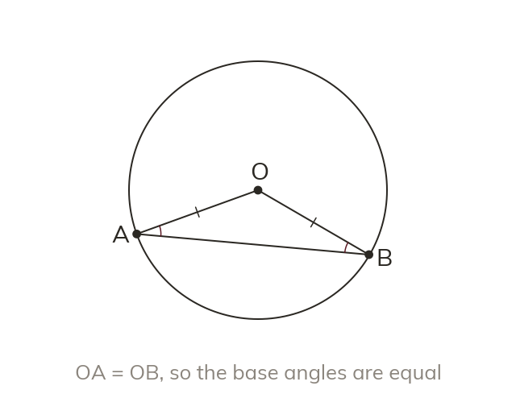
Two radii make an isosceles triangle
Every radius of a circle is the same length. So a triangle with two radii as sides is isosceles.
Wheels, arches and stadium roofs are circles, and their angles obey fixed rules. Two radii and a diameter unlock most of them.
Work down the page at your own pace. Write every answer in your book first, then click to check it.
Read each card, then follow the worked examples one step at a time.

Every radius of a circle is the same length. So a triangle with two radii as sides is isosceles.
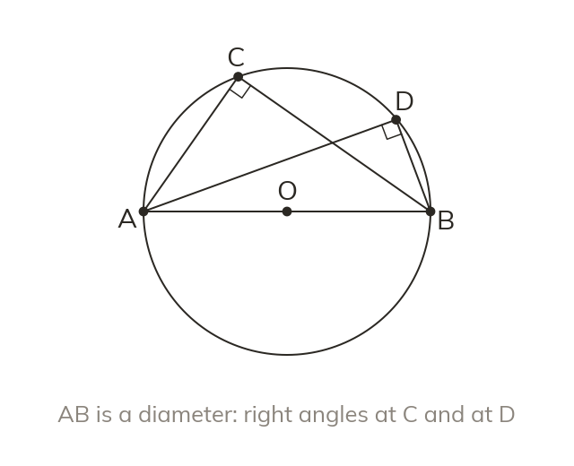
An angle at the circumference standing on a diameter is a right angle. It does not matter where on the circle the point is.
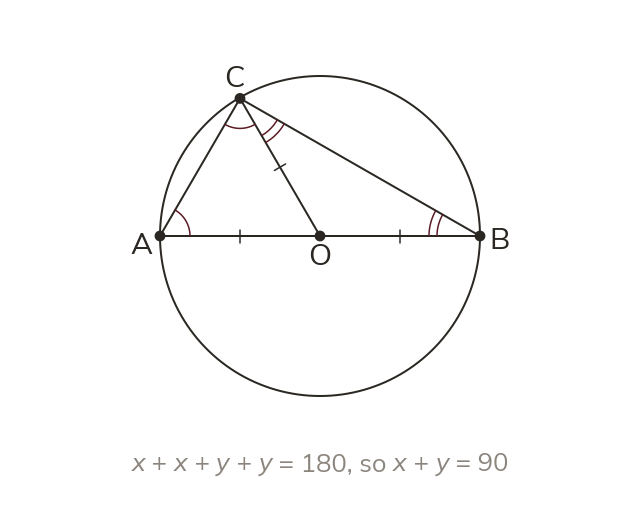
Joining O to C makes two isosceles triangles. Their base angles fill so the angle at C is half of it.
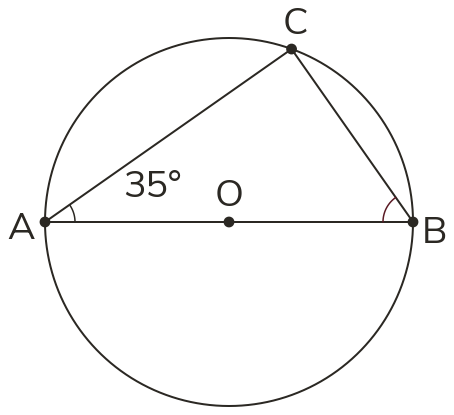
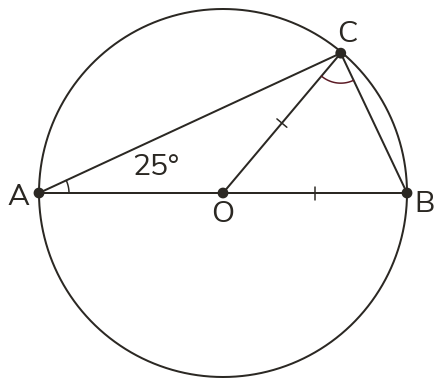
Pick an answer. If it's wrong, the feedback tells you which mistake it was.
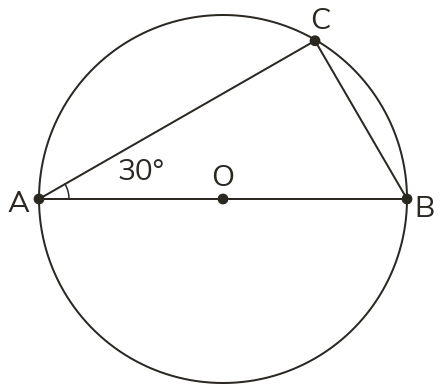
Read each card, then follow the worked examples one step at a time.
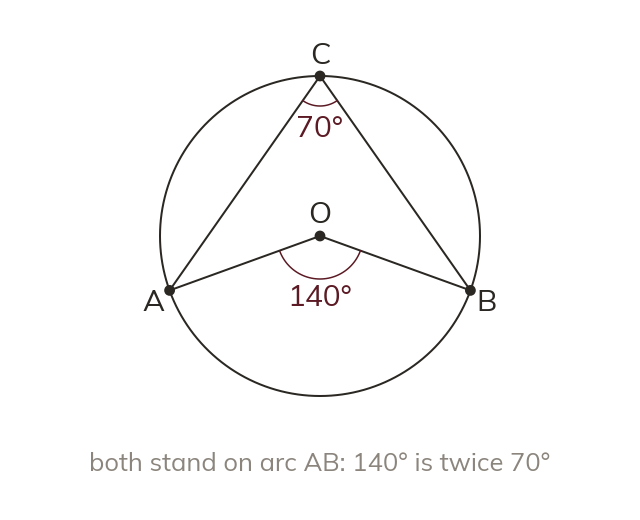
An angle at the centre is twice an angle at the circumference. Both must stand on the same arc.
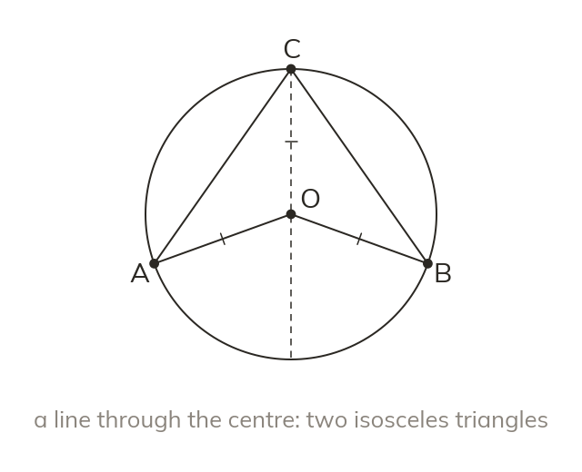
The line from C through O makes two isosceles triangles. Each one's angle at O is double its angle at C.
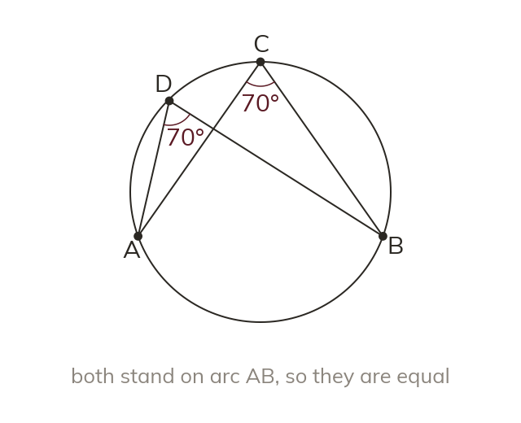
Two angles at the circumference on the same arc are equal. Each is half of the same angle at the centre.
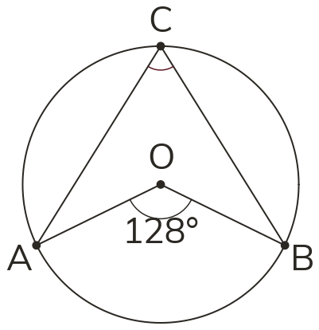
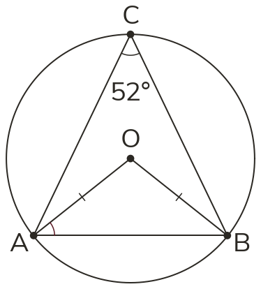
Pick an answer. If it's wrong, the feedback tells you which mistake it was.
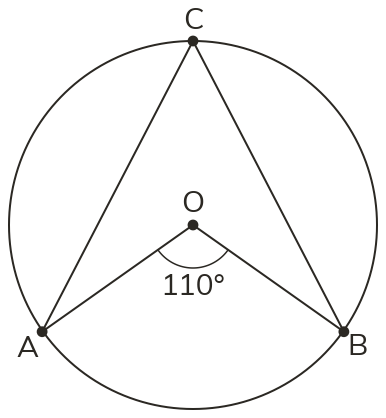
Finished? Next lesson: 10H.14.3 Cyclic Quadrilaterals and the Alternate Segment.
Log in, then search for a code to practise that skill.
Videos, worksheets and more on each part of this lesson.